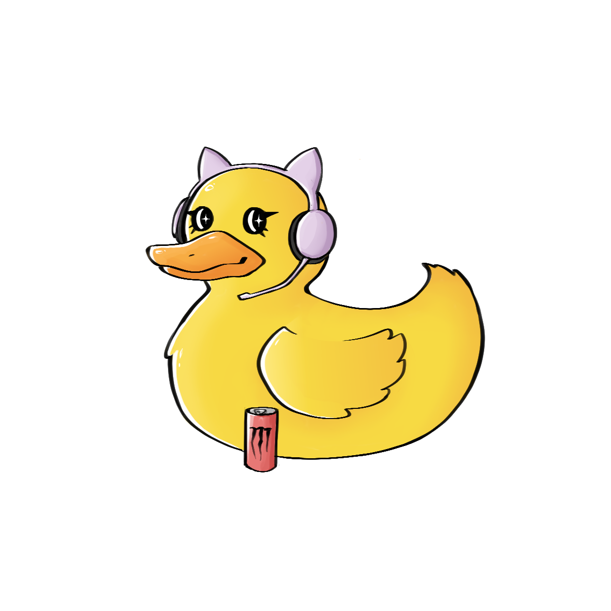
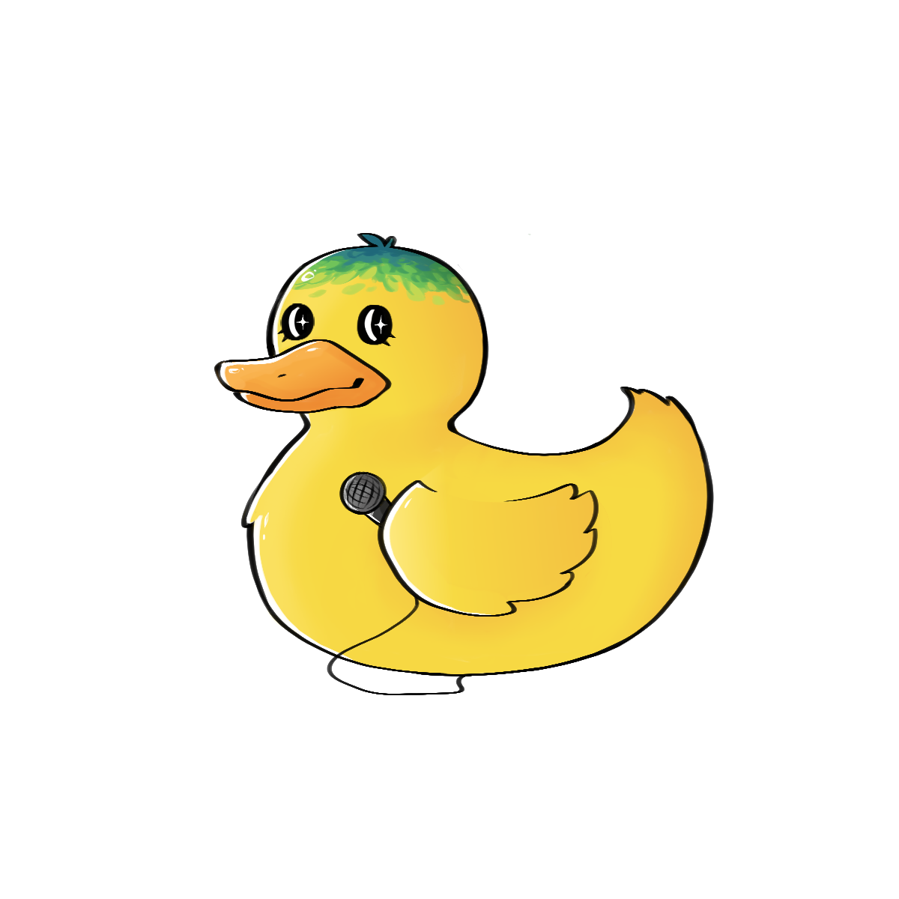
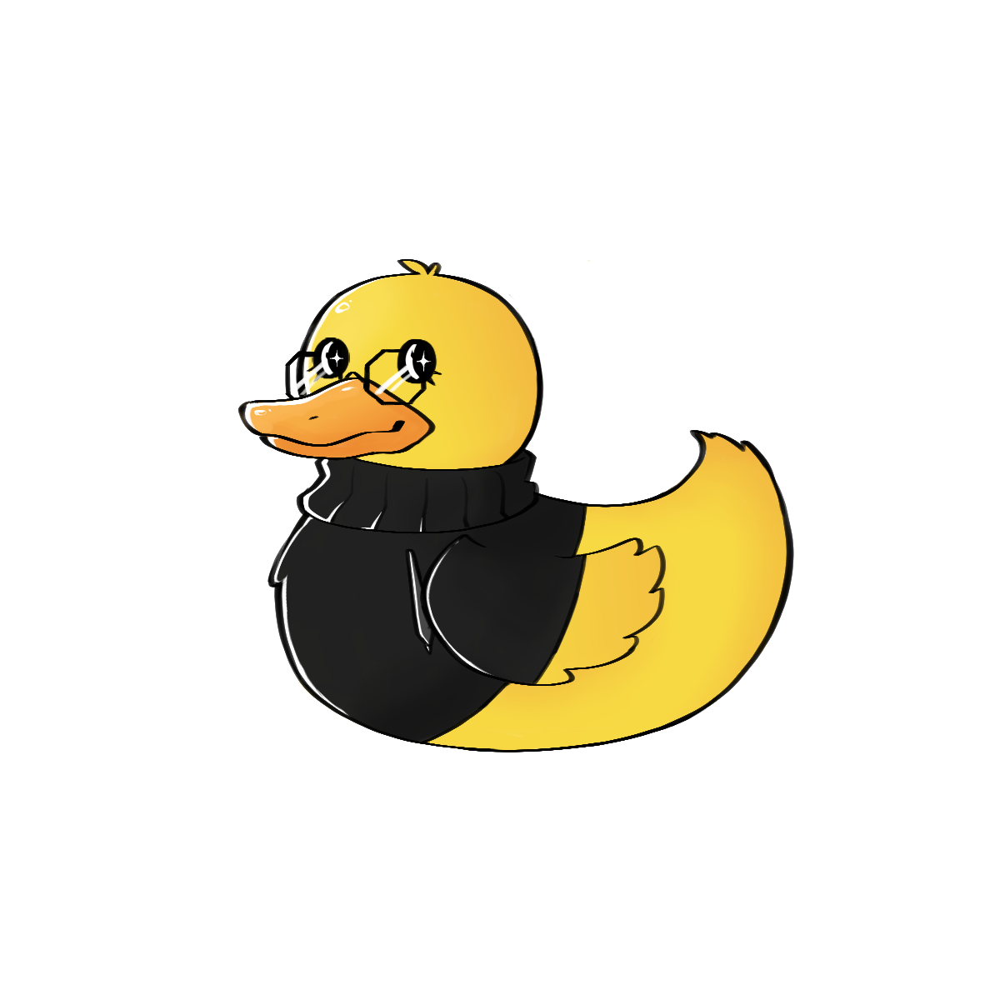
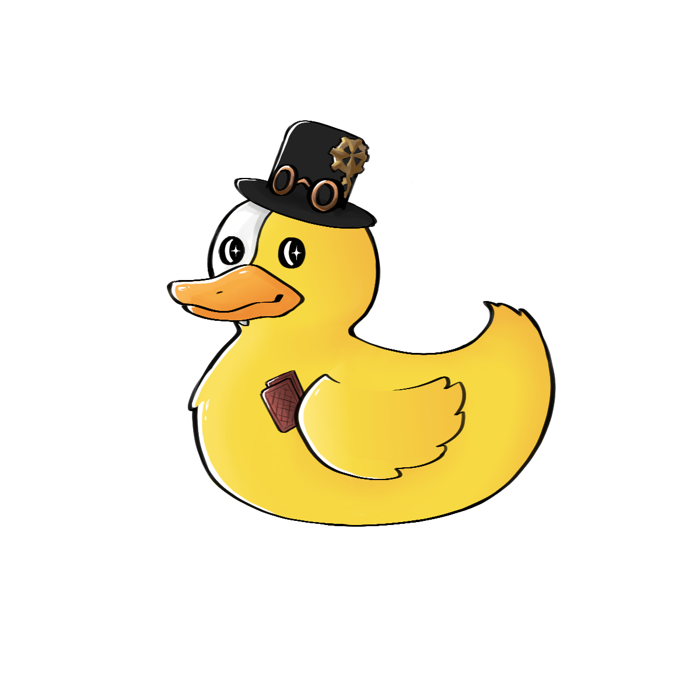

Dodie BONIS
Responsable Énigmes & WorldBuilding

Amandine DOS SANTOS
Responsable Communication

Jules-Arthus KLEIN
Responsable Technique

Lucie ROMAY
Responsable Graphismes

Thomas SOLER
Chef de Projet / Responsable Développement